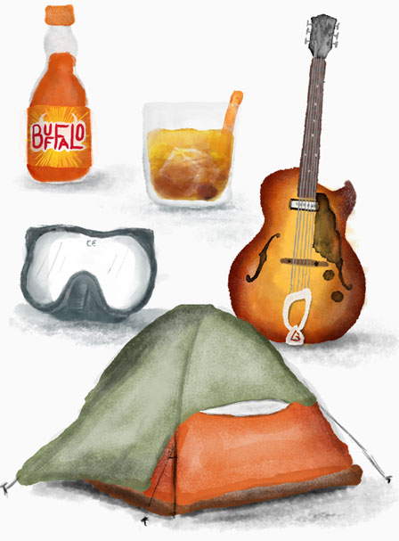

			<section id="top">
				<div class="wrapper s-padinfull m-padinfull l-padinfull">
					<article class="s-all m1-m2 l1-l2 s-padinfull">
							<div class="pad-top">
								<h1>Ab<span class="swash">o</span>ut Justin</h1>
								<p class="intro">I&rsquo;m a De<span class="swash">s</span>igner, Front-End Developer &amp; Illustrator with a passion for building beautiful, functional websites.</p>
								<p>Welcome to my small corner of the interweb. I work with individuals, entreprenuers and small businesses to build brands and responsive websites. I&rsquo;m currently working remotely following my <a href="https://instagram.com/thensusansaid">lovely wife</a> around the country with our cross-eyed siamese cat <a href="http://instagram.com/chandler_cat">Chandler</a>. When I&rsquo;m not pushing pixels and lusting over ligatures, I can be found next to the nearest basket of buffalo wings or tinkering with sounds through my tube amp.</p>
								<h2 id="colophon"><span class="salt">C</span>olopho<span class="swash">n</span></h2>
								<p>This site is the 3rd iteration since it began in 2009. The first two versions were mainly static image heavy portfolios as I learned to code, this latest evolution is more personal. Openness is one of the things I love about the web community and this site will serve as a sandbox for experiments, thoughts and a bit of show and tell for everything I've been up to lately. It's the start of a journey to write more and contribute what I can to the community I've learned so much from.</p>
								<h3>Site Details</h3>
								<p>A product of thought, sweat, work &amp; learning over the last couple years. The site is responsive, hand written HTML/CSS and supercharged with <a href="http://jekyllrb.com/">Jekyll</a>, <a href="http://sass-lang.com/">SASS</a>, and by <a href="https://gridsetapp.com/">Gridset</a>.</p>
								<p>Typefaces are <strong>Bookmania</strong> and <strong>Proxima Nova Alt</strong>, both beautifully crafted by <a href="http://www.marksimonson.com/fonts">Mark Simonson</a>, &amp; served up in webfont form via <a href="http://www.webink.com/">WebIn<span class="swash">k</span></a>. Hosted by <a href="http://mediatemple.net/">(mt)</a>.</p>
							</div>
					</article>
					<aside id="about" class="s-all m3-m4 l3-l4 s-padinfull">
						<div id="about-image">
							<figure>
								
							</figure>
						</div>
						<h2 id="things">Favor<span class="dlig">it</span>e <span class="swash dlig">Thi</span>ngs</h2>
						<figure>
							
						</figure>
					</aside>
				</div>
			</section>